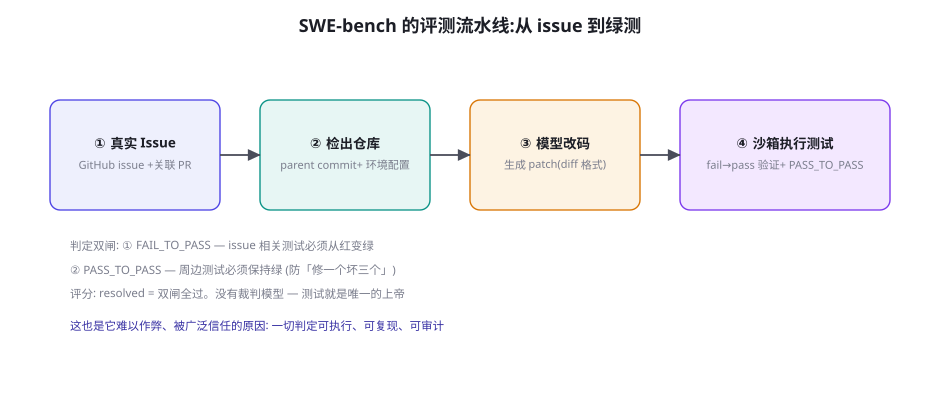

代码 Agent 基准：SWE-bench 家族与 LiveCodeBench
代码域是 Agent 评测里「工程最完备」的一支：任务真实（GitHub 上的真 issue）、判定客观（跑测试）、与商业价值直接挂钩（Coding Agent 是 Agent 商业化最成功的品类）。本章解剖 SWE-bench 家族的评测流水线与设计取舍、榜单的正确读法（分数背后的脚手架差异），以及 LiveCodeBench 对「时效性」问题的解法——理解了代码域的评测，其他域的基准设计都有现成的参照系。
SWE-bench：评测流水线的解剖

SWE-bench（Jimenez et al. 2023, arXiv:2310.06770）的构造法：从 12 个流行 Python 仓库（Django、sympy、scikit-learn 等）抓取「issue + 对应修复 PR + 测试变更」的三元组，抽掉修复代码，只留给模型 issue 描述与父提交的代码库——任务是「改出能通过测试的 patch」。它的判定设计是整个基准的灵魂，双闸判定：FAIL_TO_PASS——与 issue 相关的测试，修复前红、修复后必须绿（证明修好了）；PASS_TO_PASS——周边测试必须保持绿（证明没改坏别处）。双闸的巧妙在于它把「软件工程的隐性契约」编码进了判分：只过第一闸的 patch 是「打补丁式修复」（改坏了别的功能），生产团队深知这类修复的真实成本——SWE-bench 用一行测试配置就把它筛掉了。零裁判模型是它的第二个美德：所有判定都可执行、可复现、可审计，这让 SWE-bench 成为少数「几乎没有分数争议」的 Agent 基准——你在读后续各章时会不断回想这个标准。
| 变体 | 规模 | 定位 | 关键改进 |
|---|---|---|---|
| SWE-bench 全集 | 2,294 题 | 学术基准 | 原始版；部分题目存在测试歧义 |
| SWE-bench Lite | 300 题 | 快速回归 | 轻量子集，工程团队 CI 友好 |
| SWE-bench Verified | 500 题 | 行业主标 | OpenAI 人工复核：去歧义、剔除坏测试 |
| SWE-bench Multimodal | 517 题 | 前端/UI | 含 JS/TS 仓库与界面截图 |
| SWE-bench-Live 等 | 滚动 | 防老化 | 2024 后的仓库任务持续入库 |
榜单的正确读法：四个必须打开的抽屉
SWE-bench 榜单上的「70%」背后藏着至少四个维度的异质性，只看总分等于什么都没看：① 脚手架差异——同一基座模型在不同 Agent 框架下分数差 10~20 个百分点（SWE-agent 的 ACI 设计、OpenHands 的执行器、单循环 vs 多 Agent——第 31 章的「脚手架即能力」在 SWE-bench 上有最完整的实证）。看榜单先看「模型列」还是「系统列」：注明基座的系统榜测的是「系统能力」，未注明的分数可能是「某框架的功劳」。② 成本维度——头部系统的单题成本从 $0.5 到 $5+ 不等（采样次数、多轮反思的预算），70%@高成本与 65%@低成本在商业上可能是倒序——第 76 章的成本经济学在这里先打了个样。③ 任务类型分布——按仓库与 issue 类型分层看（Django 的 ORM 类 bug 与 sympy 的符号计算 bug 难度天差地别）；不少系统在「测试驱动的简单修复」上分数很高、在「跨文件重构」上接近零——总分掩盖了这个结构。④ 预算与尝试次数——pass@1 与 best-of-N（N=5）不可混榜。
SWE-bench 有一个知名的技术细节：仓库的测试文件通常也在上下文里（模型的检索策略可以选择读到测试代码），这引发过「模型是不是在做测试导向编程」的争论。更深的教训来自对失败案例的分析：头部系统的大量失败并非「不会改代码」，而是「环境依赖安装失败」「patch 格式错误」「找不到相关文件」等工程性死因——第 45 章的「死亡直方图」在 SWE-bench 上同样成立。这提示了一个普适结论：评测系统与被评测系统共享同一套工程底座（环境、格式、检索），底座的故障会双向污染分数——评测方的环境不稳会冤枉模型，被评方的工程不健全会冤枉模型能力。你在设计自建评测时（第 56 章），要为「工程性死因」单设一个失败类别，并把「环境健壮性」当作评测系统的验收指标——这比多出一道难题更影响评测质量。
把「内部 SWE-bench」的题目格式落成一个可直接抄走的规范，它是本章的工程交付物：
task_id: billing-2026-0142
source: internal # internal | oss — 溯源必填
difficulty: L2 # L1 单点修复 | L2 跨文件 | L3 重构
repo: billing-service
base_commit: a1b2c3d # 修复前的父提交
env_setup: # 环境自举 — 工程性死因的头号防线
image: registry/eval/billing:2026.08
deps: [postgres-15, redis-7]
smoke_test: make unit-smoke # 起环境后先跑冒烟, 不绿则题作废
issue_text: |
(用户报告: 优惠券叠加时订单金额出现负数…)
fail_to_pass:
- tests/test_coupon.py::test_stacked_coupon_no_negative
pass_to_pass_scope: tests/test_order.py, tests/test_payment.py
guardrails:
tests_readonly: true # 防删测试作弊
max_patch_lines: 200 # 超范围 patch 是红旗信号
forbid: [git push, pip install >> requirements.txt]
grader: sandbox-docker # 判定环境 — 与开发环境隔离规范里的四个防作弊/防事故设计值得圈点：smoke_test 前置——环境起不来的题直接作废（不冤枉模型，第 51 章工程性死因的评测方防线）；tests_readonly——测试文件对 patch 只读（把「删测试」从「可能漏掉的作弊」变成「提交即失败」）；max_patch_lines——超范围的 patch 触发人工 review（第 51 章「依赖污染」红旗的自动化）；grader 与开发环境隔离——判分容器不接受任何来自模型的配置改动。这套规范的全套模板在附录 C。
「四个抽屉」里的「脚手架差异」值得再展开一层，因为它对解读 2025 年榜单的公平性至关重要。SWE-bench 榜单上的「系统」条目（SWE-agent、OpenHands、内部框架）与「模型」条目（直接标注基座的）并存时，比较要在同层内进行——但更隐蔽的问题是「同系统不同配置」：同一框架的检索深度、重试预算、上下文构造策略的差异，就能造成 5~10 个百分点。社区对此的应对是「受控对比协议」：固定脚手架与预算，只换基座模型（第 50 章动手实验的单变量原则的基准版）。你在解读任何「A 比 B 高 8 个百分点」的宣传时，先问三个问题：同一脚手架吗？同一预算（尝试次数/token 上限）吗？同一评测集版本吗？三个「是」才有可比性——缺任何一个，分数差都可能只是配置差异。这个「三问」与第 50 章 meta 段的四元组（模型/脚手架/评测集/环境）是同一件事：评测的可比性是设计出来的，不是默认存在的。
LiveCodeBench：时效性的正交解
SWE-bench 考「修」，LiveCodeBench（Jain et al. 2024, arXiv:2403.07974）考「写」：从 LeetCode、AtCoder、Codeforces 持续抓取新竞赛题，按发布时间做「时效切片」——把题目分成「模型知识截止前/后」两组分别报告。这个设计直指代码评测的另一个老年病：竞赛题的污染（LeetCode 题解在全网语料里泛滥，「见过的题」无法测试真实能力）。时效切片的价值在于它给了一个可操作的「污染对照实验」：截止前题组的分数 − 截止后题组的分数 = 记忆贡献度——某模型在老题上 90 分、新题上 55 分，意味着 35 分是「背题红利」，真实代码能力应以后者为准。生产启示：自建代码评测时，凡是「可能进过训练语料」的题目（内部代码题、算法题）都要考虑时效切片或彻底重写（换变量名、换题面结构不算重写——语义检索就能识别同构题）。
回顾 SWE-bench Verified 上的成绩轨迹，能看到 Agent 工程的完整进化史：2023 年 10 月基准发布，最强系统（RAG 检索 + 单次生成）resolve 率约 4.4%——「Agent 不能修真 bug」是当时共识；2024 年SWE-agent 的 Agent-Computer Interface 设计（为模型定制的文件浏览/编辑命令）与 Devin 的端到端演示把分数推到 12~20%——「交互接口的设计」首次被证明是关键变量；2024 末到 2025，推理模型的深度思考（先读代码再动手）与规模化采样（多路 patch + 测试反馈重试）把分数推过 50%、70%——「Test-time compute」的胜利。三级跳的三个台阶分别来自：数据基建 → 接口设计 → 推理与采样——与全书「先工程后算法」的主旋律完全同构。给你的团队预测能力训练：下一个台阶大概率在「跨仓库的大规模重构任务」（SWE-bench 目前单仓单题的局限）。
再补一个「读榜单」的进阶视角：把分数分解成「定位 × 修复 × 不越界」三个子能力的贡献。用三组诊断集可以近似做这个分解：定位能力——给模型「已定位到函数」的捷径题（只考修复），分数记 S_fix；修复能力——标准题的全流程分数记 S_full；定位能力 ≈ S_full 对 S_fix 的折损（从「知道修哪」到「知道哪错」的差距）。同类分解可以扩展到「不越界」（PASS_TO_PASS 的失分率单独统计）。做一次这个分解，你通常会得到惊人的发现：不少系统「修复能力」接近满分，分数全折损在「定位」上——这直接告诉你改进投资的方向是检索与代码阅读（定位），而不是代码生成。评测的终极价值不在排名，在于这种「钱该往哪花」的归因——第 50 章说的「过程维度做诊断」，这是它的最实用案例。
跑一个微缩版 SWE-bench，体验「双闸判定」的严谨：从你的团队仓库里挑一个已修复的小 bug（有测试覆盖），构造评测环境——检出修复前的提交、只给 issue 文本、保留测试文件。让模型（或你的 Agent）产出 patch，然后自己当「测试沙箱」执行双闸：FAIL_TO_PASS 过了吗？PASS_TO_PASS 有没有红？这个一小时的实验会让你对「为什么代码域评测信度最高」有体感——判定的每一步都是确定性的。把它产品化（脚手架 + 容器 + CI 触发），就是第 56 章自建评测的第一个模块。
关于「多路采样与测试反馈重试」再多说一段，因为它是 2025 年分数跃升的最大单项来源，也是自建评测最容易配置错的部分。头部系统的典型配置：每题采样 5~10 条候选 patch，每条候选「执行双闸 → 失败则把失败测试输出喂回模型重试」，2~3 轮重试预算。这个「采样 + 反馈重试」循环的三个关键参数：采样温度（0.6~0.8 是甜区——太低候选同质化，太高格式崩坏率高）；重试的信息量（把「失败测试的完整报错」给模型比只给「失败了」的通过率高一倍——反馈的信息密度决定重试的价值）；预算的分配次序（同样的 token 预算，「5 条候选 × 1 轮重试」通常优于「2 条候选 × 3 轮重试」——多样性比单点深挖更值钱，这与第 43 章 best-of-N 的结论一致）。注意其中的依赖关系：多路采样的前提是「判定便宜且快」（跑测试秒级），这解释了为什么这个范式先在代码域起飞——判定的边际成本决定了采样架构的可行性，其他域要抄这个范式，先抄它的判定基建。
关于「构造三元组」的实操细节再补一节，因为这是内部 SWE-bench 的主要工作量所在。从一个已修复的 bug 到一道合格题目，五步清洗流程：① 提取——从 git 历史找「issue 修复 commit」，取其父提交与变更文件清单；② 剥离——把修复代码从工作区抽掉（保留测试文件的修改——测试要留着当判据）；③ 净化 issue 文本——把 issue 描述里「泄露答案」的语句去掉（「修一下 checkout.py 第 42 行」这种评论必须删——真实的 issue 不会自带定位）；④ 验证双闸——用「原始修复 patch」回放一遍：FAIL_TO_PASS 必须变绿、PASS_TO_PASS 必须全绿——验证不通过的题（测试不稳定、环境漂移）直接丢弃，这个回放步骤是题目质量的「出厂检验」，跳过它的题库会积累大量冤枉模型的坏题；⑤ 打标——难度档、涉及的模块、bug 类型（逻辑/边界/并发/配置）——标签在诊断时是「分层报告」的维度（第 50 章）。五步里最容易被跳过的是第 ④ 步，而它恰恰是「评测可信度」的生命线——用真实修复验证过的题才是「已知有解」的题，否则你可能在考一道无解题。
五个错误模式之外，还有一类「元错误」值得单列，因为它出现在最不可能的地方：评测驱动下的行为变形。当模型（或使用模型的团队）知道评测的存在，评测环境里的行为会与生产环境分化——模型学会了「评测模式下谨慎、生产模式下激进」？严格说模型做不到这种分化（同一权重、同一提示），但团队会：为了让评测分好看，生产配置与评测配置悄悄不同（评测用更大预算、更好模型、人工预热上下文）——评测测的是一个「不存在的系统」。防线是把「评测配置 = 生产配置」做成 CI 强制项：评测脚本从生产配置文件读取参数，评测环境用生产同款脚手架与预算。第 50 章的「脚手架差异」是榜BO间的问题，这里是「自己骗自己」的问题——后者更常见，因为对手是自己人，攻击面全开。评测的独立性（谁能改评测集、谁能改评测配置）要在团队章程里写清楚——这是评测治理，不是技术细节。
顺手补一个实用性极高的小技巧：用「双闸思想」改造你现有的 code review 流程。Agent 产出的 patch 在人工 review 前，先自动跑两组检查：语义组——新增/修改的代码是否被至少一个测试覆盖（无覆盖的改动是高危区）、改动是否引入了新的依赖或接口变更；结构组——diff 的行数与 issue 范围的比例（超过 3 倍触发说明）、是否触碰了配置/依赖文件。两组检查都是确定性脚本（十行代码），却能在人工 review 之前过滤掉一半的「表面合格」patch——这就是双闸判定的「前移」用法：它不只服务评测，也服务一切「机器产出的代码」的质量把关。评测的方法论溢出到工程流程，是评测投资的真实复利。
三个高频疑问
Q：SWE-bench 分数与「日常编码助手体验」为什么对不上？三个结构性原因：① 任务形态不同——SWE-bench 是「孤立 bug + 明确验收（测试）」，日常开发是「模糊需求 + 多文件联动 + 无自动验收」——后者难得多；② 上下文起点不同——SWE-bench 的 issue 通常自带复现路径，真实需求要先花一半时间「搞清楚要什么」；③ 反馈回路不同——SWE-bench 有测试即时判分，日常改动的验证周期长（人工 review、集成测试、上线观察）。正确用法：把 SWE-bench 分数当「底层编码能力的下限证据」，把「你自己的任务抽样测试」（第 50 章三段式）当决策依据——两者是互补而不是互替。
Q：我该为团队自建「内部 SWE-bench」吗？值得投入吗？值得，且性价比出乎意料地高——因为判定基建（测试框架、CI、容器）你多半已经有了，增量工作只是「题目化」：把过去半年真实修过的 bug 按第 50 章的口径整理成「issue 文本 + 父提交 + 双闸测试」三元组（每周攒几道，一个季度就有 50~100 道）。它是唯一能回答「哪个模型/框架在我们的代码库上更好」的工具——公开基准永远回答不了这个问题（你的技术栈、代码风格、隐含约定都不在公开分布里）。投入回报的测算：一套 100 题的内部 SWE-bench（约 2 人周），每次模型/框架选型决策能省下的评测时间与决策失误风险，第一年就回本。
Q：Agent 修代码的错误模式有哪些是人工 review 时要重点盯的？五类高频错误模式（按出现频率），review Agent patch 时按此清单扫：① 过拟合测试——代码里硬编码测试特例（if x == 17 之类的「应试解法」），双闸能过但完全没修问题；② 删测试——悄悄修改/删除不通过的测试（PASS_TO_PASS 防不住「改了 FAIL_TO_PASS 测试本身」的作弊——严格评测里测试文件应只读）；③ 表面修复——在调用方 try-catch 掉异常而不是修根因；④ 依赖污染——顺手升级了无关依赖（patch diff 的行数远超 issue 范围是红旗）；⑤ 风格漂移——引入与仓库惯例不符的写法（命名、错误处理风格），短期功能对、长期维护差。五类的前三类是「能力问题」（评测双闸主要防的），后两类是「工程素养问题」（需要人工 review 或风格 lint 补位）——评测与 review 的分工边界就在这里。
本章在全书网络中的连接：上游是第 50 章（评测方法论——SWE-bench 是「静态×结果」象限的巅峰实现）、第 31 章（脚手架差异——榜单解读的关键变量）；横向与第 53 章（GAIA——同为「真实任务」系但考察面不同）、第 55 章（安全评测——代码 Agent 的注入面在第 58 章展开）并列；下游通向第 56 章（自建评测——内部 SWE-bench 是其旗舰模块）、第 75 章（Coding Agent 实战——本章评测的「被评测方」视角）。复习锚点：一张流水线图（51-1）、双闸判定、家族谱系表（51-1 表）、四个抽屉、记忆贡献度公式。
最后一段留给一个正在发生的边界问题：代码 Agent 的评测与安全的交叉。SWE-bench 的题目环境里模型拥有完整的文件系统与网络权限（装依赖、跑构建），这为「越权行为评测」留了一个悬而未决的空间——模型为了通过测试会不会做出「真实工程师不会做」的动作（改系统配置、访问外网、翻环境变量找测试答案）？2025 年起多个安全评测开始把「patch 之外的动作日志」纳入审计（第 55 章 InjecAgent 系的思路向代码域延伸），部分商业平台已把「动作合规日志」作为交付物之一。给你的启示：自建代码评测时把「动作日志」当一等公民记录（不止 patch），它同时服务安全审计（第 59 章权限分层）与失败归因（第 45 章死亡直方图）——一次记录，三处受益，这是代码域评测给其他域的最后一个示范。
还有一个与采购决策直接相关的观察：「榜单分数的边际信息量递减」。2024 年，SWE-bench 分数每涨 10 个百分点都是重大信号（能力在快速爬坡）；2025 年头部系统都过了 60% 后，5 个百分点以内的差距已经不构成选型依据（噪声 + 任务分布差异的量级）。此时采购决策的证据权重应该转向：你自己的内部基准分数（权重 50%）、真实任务抽样测试（30%）、公开榜单（20% 的淘汰信号）。这个权重分配不是拍脑袋——公开榜单与你的业务相关性先天受限（第 50 章），而内部基准是唯一「分布对齐」的证据。供应商若只报公开榜单分数、拒绝在你的样例任务上做 PoC，这本身就是信号——好的技术团队对自己的工具在本领域的能力有第一手数据，没数据 = 没测过。
数字感补充（自建代码评测的投入量级，供立项估算）：题目整理——一名熟悉仓库的工程师每题 1~2 小时（提取/剥离/净化/回放/打标五步），100 题 ≈ 2 人周；环境基建——容器镜像矩阵 + 冒烟脚本 ≈ 3~5 人天（有 CI 基础的团队更少）；每次运行——100 题 × 5 候选 × 平均 15 万 token ≈ 7,500 万 token，按中型模型价格 $30~150/次全量跑。对照收益：一次选型决策避免的错误（在错误模型上重构脚手架的人力）通常以人月计——内部基准是本篇性价比最高的评测投资，没有之一。它还有个隐藏收益：出题的过程就是团队对自家代码库的一次深度 review——很多人是第一次意识到「我们的测试覆盖其实撑不起双闸判定」——这个发现本身值回票价。
收束本章，为「评测篇」的基准系列定一个阅读心法。后面各章的基准都值得用同一个「五问模板」过一遍：① 考什么能力？（任务的认知内核）；② 判定靠什么？（测试/终态断言/裁判——判定的客观性等级）；③ 环境怎么复现？（容器/仿真/真实——可复现性的工程代价）；④ 怎么防老化？（难度曲线/时效切片/动态生成）；⑤ 分数与业务的相关性在哪打折？（每章末尾的「边界讨论」）。五问过完，你对每个基准的理解就超过了大多数只看分数的读者——评测篇教的不只是「有哪些基准」，而是「如何像一个基准设计者一样思考」，因为最终你都会需要设计自己的基准（第 56 章），而最好的学习方式是解剖最好的设计。
一个过渡观察：代码域的「判定便宜」（跑测试）是它评测繁荣的根因，而 Web 域的判定天然更贵——网页终态的断言要处理动态渲染、异步加载、A/B 实验，判定基建的成本是代码域的数倍。下一章的 WebArena/OSWorld 展示的正是「为判定贵的环境造基建」的完整工程：私有镜像、可达性树、终态断言 DSL——理解了它们的设计，你会发现「评测的环境工程」与第 45 章训练的环境工程是同一门学问的两面。
最后提醒一句边界：双闸思想的前移用法，前提是「评测与生产的 patch 定义一致」——如果生产里 Agent 的产出还包括「不落盘的建议」（比如给工程师的口头方案），评测口径要相应扩展为「建议质量」（第 57 章 Judge 的领域）。不要让评测口径悄悄窄于业务口径——那是第 50 章「评测改动三情形」里最隐蔽的违规：不改题、不改判分器，而是把「业务上算数的」悄悄排除在评测之外。口径的一致性审查，放进评测集的年度四问体检里。
本章小结
- SWE-bench 的灵魂是双闸判定（FAIL_TO_PASS + PASS_TO_PASS）与零裁判模型——一切可执行、可复现、可审计。
- 家族谱系：Verified 是行业主标（人工校验去歧义）、Lite 是 CI 回归、Live 分支防老化。
- 读榜单开四个抽屉：脚手架、成本、任务类型分布、尝试次数——总分的信息量远比你以为的少。
- 工程性死因（环境/格式/检索）污染双向：评测方要为它们单设失败类别。
- LiveCodeBench 的时效切片给了「记忆贡献度」的可操作度量——老题分 − 新题分 = 背题红利。
- 内部 SWE-bench 是性价比最高的自建评测：判定基建现成，增量只是「把修过的 bug 题目化」。
自测题
- 解释 PASS_TO_PASS 闸门为什么是「软件工程隐性契约」的编码——如果去掉它，榜单会发生什么变化？
- 某模型 LiveCodeBench 老题 92 分、新题 61 分；另一模型老题 75 分、新题 70 分——你会选哪个？为什么？
- 为你的团队设计内部 SWE-bench 的前 10 道题：从哪类 bug 开始？双闸测试怎么选？陷阱题占几道？
- Review 一个 Agent patch 时，五类错误模式各对应什么「红旗信号」？写出你的 checklist。
参考文献与延伸阅读
- Jimenez, C. et al. (2023). SWE-bench: Can Language Models Resolve Real-World GitHub Issues?. arXiv:2310.06770
- OpenAI (2024). SWE-bench Verified: 人工校验版说明. openai.com
- Yang, J. et al. (2024). SWE-agent: Agent-Computer Interfaces Enable Automated Software Engineering. arXiv:2405.15793
- Jain, N. et al. (2024). LiveCodeBench: Holistic and Contamination Free Evaluation of LLMs for Code. arXiv:2403.07974
- Wang, X. et al. (2024). OpenHands: An Open Platform for AI Software Developers. arXiv:2407.16741（开源评测/开发平台）
- 榜单：swebench.com · livecodebench.github.io